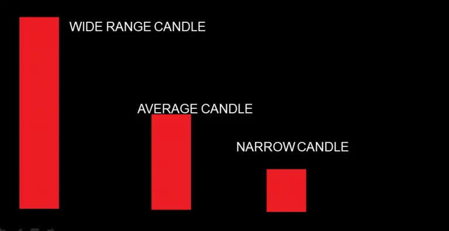
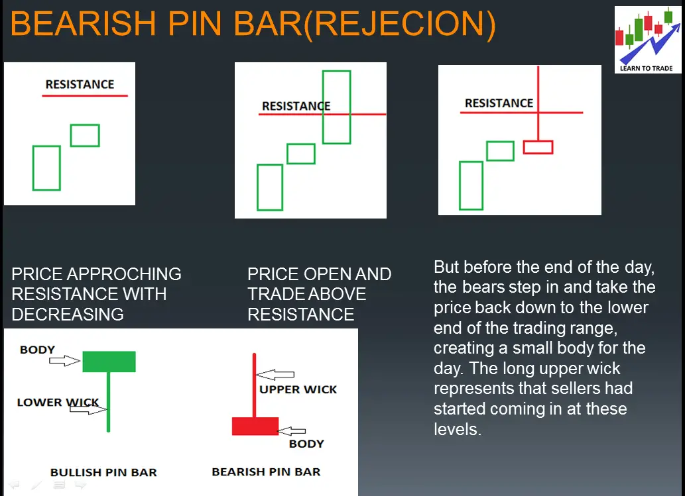
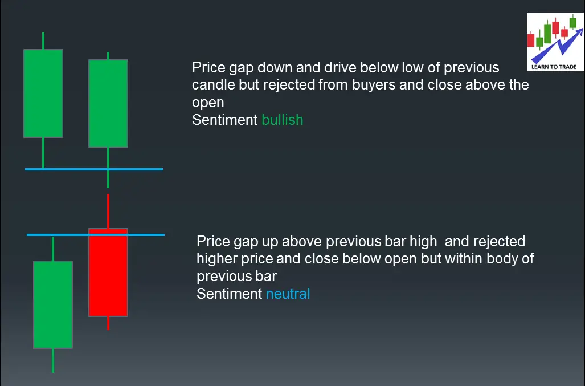

এই প্রবন্ধে, আমিট্রেডিংয়ে ক্যান্ডেলস্টিক বিশ্লেষণ নিয়ে আলোচনা করবো। বিস্তারিতভাবে কিভাবে ক্যান্ডেলস্টিক অধ্যয়ন করবেন এ সম্পর্কে আমাদের আগের প্রবন্ধটি পড়ুন। ক্যান্ডেলস্টিক এবং এর আচরণ বুঝতে আপনার প্রয়োজনীয় চূড়ান্ত গাইড। অধ্যয়নের পর, আপনাকে আর কোনো ক্যান্ডেলস্টিক প্যাটার্ন চিহ্নিত করতে হবে না। এই প্রবন্ধের অংশ হিসেবে, আপনি ট্রেডিংয়ে ক্যান্ডেলস্টিক বিশ্লেষণের সাথে সম্পর্কিত নিম্নলিখিত চারটি বিষয় বুঝতে পারবেন।
মনে রাখবেন যে প্রতিটি বারে একই সংখ্যক চুক্তি/শেয়ার বিক্রি এবং কেনা হয় নির্দিষ্ট সময়সীমায়
সাধারণত আমাদের ৩ ধরণের বডি বিবেচনা করতে হয়

মোমের গায়ে অনেক তথ্য দেখা যায়, যেমন
আমরা কিছু উদাহরণ দেখি
কোন সলতি, তা মোমবাতির উপরে বা নিচে হোক না কেন, তার দৈর্ঘ্য সর্বদা প্রথম ফোকাস পয়েন্ট কারণ এটি তাত্ক্ষণিকভাবে শক্তি, দুর্বলতা এবং দ্বিধা প্রদর্শন করে, এবং সবচেয়ে গুরুত্বপূর্ণভাবে, যেখানে স্মার্ট-মনী প্রবেশ করে তা প্রদর্শন করে।
পিন বারটি বোঝা যাক

যখন মোমবাতি ৭০-৮০% সময় ধরে একটি অঞ্চল ভেদ করতে পারে না, তখন তারা বিপরীত দিকে যাবে।
এর মানে প্রতিটি বারের সাথে পূর্ববর্তী বারের তুলনায় উচ্চ/নিম্ন সম্পর্ক কী? এটা আমাদের কী বলছে?

ক্যান্ডেলস্টিকগু্লিকে চলাচলের প্রেক্ষাপট বিশ্লেষণ করতে হবে। আপনি কখনই একদিনের ক্রিয়াকলাপকে বিচ্ছিন্নভাবে দেখে বাজার পড়তে চেষ্টা করবেন না। ক্যান্ডেলস্টিককে সর্বদা অতীতের যা ঘটেছে তার প্রেক্ষাপটে বিশ্লেষণ করতে হবে।
প্রেক্ষাপট হল বর্তমান ক্যান্ডেলস্টিক পূর্ববর্তী ক্যান্ডেলস্টিকের সাথে যা দেখায়।

পরীক্ষা বলতে মার্কেটের এমন একটি মূল্য স্তরের দিকে অগ্রসর হওয়া বোঝানো হয় যেখানে মূল্য স্তর মার্কেটের অগ্রগতিকে স্বীকার বা প্রত্যাখ্যান করবে কিনা তা "পরীক্ষা" করা হয়। গুরুত্বপূর্ণ স্তরগুলি হল
প্রত্যেক মূল্য বার-এর উচ্চ এবং নিম্ন প্রাকৃতিক সমর্থন এবং প্রতিরোধ স্তর, এবং সাপ্লাই এবং ডিমান্ড জোন হিসেবে সাধারণভাবে উইক কাজ করে। এই স্তর বা জোনগুলির পরীক্ষা মার্কেটের অন্তঃস্রোতগুলি প্রদর্শন করে এবং মূল্য ক্রিয়া পড়া জন্য খুবই গুরুত্বপূর্ণ।

DIRECTION, CONTEXT, TESTING-এর একটি পরিষ্কার ধারণা নিয়ে আমরা তৃতীয় ক্যান্ডেল সম্পর্কে বাজারের প্রত্যাশা গঠন করতে পারি। আমরা আশা করি তৃতীয় বারটিতে বাজার একটি নির্দিষ্ট পথে চলবে আমাদের DIRECTION, CONTEXT, এবং TESTING-এর পাঠ অনুযায়ী। তৃতীয় বারটি সম্পর্কে আমাদের প্রত্যাশার নিশ্চিতকরণ বা ব্যর্থতা বাজার সম্পর্কে আরও প্রকাশ করে এবং আমাদের ক্যান্ডেলস্টিক বিশ্লেষণে যোগ করে।
প্রত্যাশা গঠনের জন্য, আমাদের একটি খুব সহজ অনুমান করতে হবে যে বাজার কীভাবে আচরণ করা উচিত এবং কীভাবে আচরণ করা উচিত নয়।
মূলত, বাজারের গতি এবং জড়তা রয়েছে। মন্দাবস্থা মন্দাবস্থার অনুসরণ করা উচিত এবং উষ্ণতা উষ্ণতার অনুসরণ করা উচিত। যখন এটি এই অনুমান মেনে চলে না, তখন আমাদের সতর্ক হতে হবে, হয়তো বাজারের দিক পরিবর্তনের সম্ভাবনা রয়েছে।

একটি ক্যান্ডেলস্টিক প্যাটার্ন অপ্রয়োজনীয় যদি তার অবস্থান সঠিক না হয়; এটি যেখানে ঘটে তা সবচেয়ে গুরুত্বপূর্ণ পরিবর্তনশীল। সুতরাং, আমরা ক্যান্ডেলস্টিককে সুযোগের জন্য সাপোর্ট এবং রেজিস্ট্যান্সে বিশ্লেষণ করা উচিত, হয় ট্রেন্ড উল্টানো বা চলমান থাকা।
রেজিস্ট্যান্সে, আমরা আশা করি মূল্য উল্টে যাবে বা সরবরাহ চাহিদার চেয়ে বেশি হবে, যা সরবরাহ বা প্রতিরোধের স্তরটি নিশ্চিত করে। যেমন সাপোর্টে, আমরা আশা করি মূল্য উল্টে যাবে যাতে চাহিদা সরবরাহের চেয়ে বেশি নিশ্চিত হয়।
কিছু মূল পয়েন্টার বিবেচনা করা উচিত যখন রিভার্সাল লেনদেন হয়। এর মানে হল যে ক্যান্ডেলস্টিক ক্রিয়া আমাদের সাপোর্ট এবং রেজিস্ট্যান্স স্তরটি বৈধ করে। নিচে বর্ণিত
নীচে একটি শক্তিশালী উল্টো ঘুরে যাওয়ার উদাহরণ দেওয়া হল

একটি প্রতিষ্ঠিত ঊর্ধ্বগামী প্রবণতায়, পিন বার আকারে প্রতিরোধের স্পষ্ট প্রত্যাখ্যান প্রতিরোধ স্তরটি নিশ্চিত করে এবং এটি নির্দেশ করে ক্রেতারা চেষ্টা করেছিলেন কিন্তু প্রতিরোধ অতিক্রম করতে ব্যর্থ হন।


একাধিক প্রত্যাখ্যান দেখায় যে ক্রেতারা বার বার স্তরটি অতিক্রম করার চেষ্টা করেছেন কিন্তু ব্যর্থ হয়েছেন

যখন ক্রেতারা প্রতিবার প্রতিরোধ স্তরের উপরে বন্ধ করার চেষ্টা করে, প্রতিবার তারা ব্যর্থ হয় যা সরবরাহ আসছে এবং চাহিদা প্রভাবিত করার চেষ্টা করছে তা প্রদর্শন করে।

বিয়ারিশ রিভার্সাল জন্য। মূল্যটি পূর্ববর্তী মোমবাতির নিম্ন স্তর ভেঙ্গে তা প্রতিরোধে নিম্ন স্তরের নিচে বন্ধ হওয়া উচিত। এটি সম্পূর্ণভাবে বুলিশ শক্তি হ্রাস দেখা যায়।

যখন একটি মূল স্তর থেকে রিভার্সাল মোমেন্টাম মোমবাতি তৈরি হয়, এটি বিপরীত দলের স্তরের শক্তি নিশ্চিত করে। যখন সমর্থন থেকে একটি বুলিশ শক্তি মোমবাতি তৈরি হয়, এটি সমর্থন স্তরকে শক্তিশালী হিসাবে নিশ্চিত করে।
দাম সমর্থন বা প্রতিরোধের কাছাকাছি এলে একটি নির্দিষ্ট পয়েন্ট বিবেচনা করা হয়। যা আমাদের সমর্থন বা প্রতিরোধ স্তরকে বৈধ বা অবৈধ করে তোলে
একটি বিস্তৃত ঊর্ধ্বমুখী প্রবণতা সহ, যখন দাম প্রতিরোধের কাছাকাছি আসে, আমরা ক্রেতাদের অতিরিক্ত প্রচেষ্টার কারণে প্রতিরোধ ভাঙ্গা দেখতে আশা করবো
পার্ট ১: ক্যান্ডলস্টিক বুঝা
পার্ট ২: ক্যান্ডলস্টিক কীভাবে পড়তে হয়
বিস্তৃত পরিসর বার (শক্তি বা গতি প্রদর্শন করে)
সংকীর্ণ পরিসর বার (গতি বা শক্তি কমে যায়)
একটি পিন বার (মনোনয়ন বা সরবরাহ বা চাহিদা আসা)
ডোজি (অস্থিরতা)
পার্ট ৩: ক্যান্ডলস্টিক ব্যবহার করে চার্ট কীভাবে পড়তে হয়
প্রথমত, আগের ক্যান্ডলের তুলনায় বর্তমান ক্যান্ডলের দিক পড়ুন।
দ্বিতীয়ত, আগের ক্যান্ডলের তুলনায় বর্তমান ক্যান্ডলের মনোভাব পড়ুন।
তৃতীয়ত, পরীক্ষার মূল স্তর পড়ুন
আপনি যা আশা করেন তার পূর্ন
রিভার্সাল এর জন্য একটি ট্রেডিং সুযোগ খুঁজে বের করার পদক্ষেপ
Point1 প্রতিরোধ/সমর্থন এর কাছাকাছি গিয়ে গতি হারানো
Point2 পিন বার আকারে প্রতিরোধ থেকে পরিষ্কার প্রত্যাখ্যান
Point3 মূল্য প্রতিরোধের উপরে বন্ধ করতে অক্ষম হওয়া
Point4 মোমবাতির রঙ পরিবর্তন
Point5 মূল স্তর থেকে রিভার্সাল মোমেন্টাম মোমবাতি
কোন মোমবাতির কর্ম প্রতিরোধকে অবিশ্বাস করে?
প্রতিরোধ স্তরে গেলে মোমবাতির বিস্তার বাড়ে
যদি মূল্য প্রতিরোধকে আটকে রাখে তবে এটি চাহিদাকে অবিশ্বাস করে এবং চাহিদার উপস্থিতি দেখায়
ক্যান্ডেলস্টিক বিশ্লেষণ একটি কৌশল যা ১৮শ শতাব্দীতে জাপানি চাল ব্যবসায়ীদের দ্বারা উদ্ভূত হয়েছে, বিশেষভাবে মু네হিসা হোম্মার দ্বারা। এটি পরবর্তীতে পরিশীলিত এবং আধুনিক আর্থিক বাজার যেমন শেয়ার, ফরেক্স, এবং পণ্যের জন্য অভিযোজিত হয়েছে। ক্যান্ডেলস্টিক প্যাটার্নগুলি প্রযুক্তিগত বিশ্লেষণের একটি রূপ, এবং চার্টিং ব্যবসায়ীরা ঐতিহাসিক মূল্য তথ্যের ভিত্তিতে সম্ভাব্য মূল্য আন্দোলন সনাক্ত করতে ব্যবহার করে।
প্রতিটি ক্যান্ডেলস্টিক সাধারণত একটি দিনের শেয়ার সম্পর্কিত মূল্য তথ্য প্রকাশ করে (যদিও যেকোন সময়সীমা ব্যবহার করা যেতে পারে — মিনিট, ঘণ্টা, দিন, সপ্তাহ, বা মাস)। একটি ক্যান্ডেলস্টিকের তিনটি অংশ রয়েছে:
এখানে কিছু পরিচিত ক্যান্ডেলস্টিক প্যাটার্ন এবং এরা সাধারণত কি নির্দেশ করে:
ব্যবসায়ীদের মধ্যে ক্যান্ডেলস্টিক বিশ্লেষণ জনপ্রিয় কারণ এটি মূল্যের গতিবিধি এবং সম্ভাব্য বাজারের অনুভূতির একটি দ্রুত চিত্র প্রদান করে। তবে, অন্যান্য সকল ট্রেডিং কৌশলের মতোই এটি নিখুঁত নয় এবং এটি একটি ব্যাপক ট্রেডিং পরিকল্পনার অংশ হওয়া উচিত।